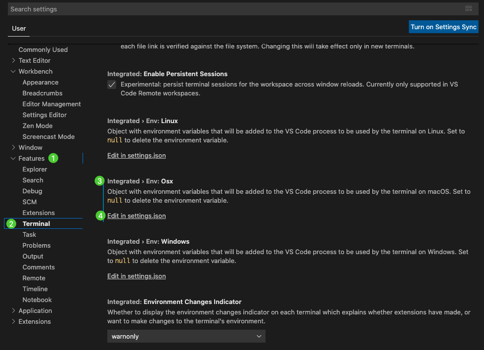

2 執行Python的code
2.1 command line
2.1.1 用interactive mode 執行
- 在command line，打
python或ipython，就會進入互動視窗，然後就可以互動的執行了
- 要結束時，再按
quit()，就會退出視窗
ipython
print("Hello, World")
quit()2.2 在VS code中執行
2.2.1 設定要使用的python版本
- 以下內容，整理至官方網站： https://code.visualstudio.com/docs/python/environments
- 打開VS code後，輸入command+shift+p (
⇧⌘P)，然後key入preferences: open user settings，開啟設定。然後照下面圖面做設定：

- 打開json檔後，做以下的輸入：
{
"jupyter.alwaysTrustNotebooks": true,
"python.pythonPath": "/Users/hanklee/.pyenv/versions/3.8.0/bin/python",
"terminal.integrated.env.osx": {
"PATH": ""
}
}- 這邊要注意的只有裡面的兩行一定要有：
-
"python.pythonPath": "/Users/hanklee/...."， 這邊的路徑，就是放你想要跑的版本。例如我都用pyenv來管理我的python version，那我可以在terminal用pyenv global 3.8.0來選定我要用3.8.0的版本後，再下which python，來得到這個版本的路徑。做完這行設定後，只要在VScode中點視窗右上角的run，他就會幫你下達這個指令：path/to/python/version path/to/this/file。
-
"PATH": ""，這個指令，是我google到的解法(連結)，主要是要解決，在VScode中，我開視窗下面的terminal，但執行python時，還是沒有執行到python.pythonPath的版本。
-